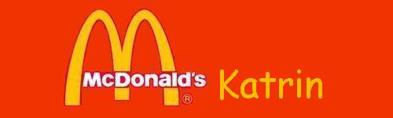

|
|
|  |
Katrin - stets ohne h und mit Brille - hat wohl von uns allen das größte Redebedürfnis. Besonders wenn es um unser ausgesprochenes Lieblingsthema Sex geht, versäumt sie es nicht, uns mit allen Details ihres nicht mehr ganz aktuellen Liebeslebens zu versorgen. Katrin schafft es immer wieder, uns mit neuen oder alten Stories zu unterhalten und vielleicht die eine oder andere Anregung zu geben. Z.B. wäre da eine Internetbekanntschaft, bei der rein sexuelle Absichten zu einer langwierigen Beziehung führten. Auch für Staubsaugervertreter mit langen Schläuchen ist unsere Katrin offen. Wenn es um das eine geht, lässt sie sich auch nicht von zu groß geratenen Details oder geruchsintensiven Attacken auf ihr Riechorgan abschrecken. Im Moment ist sie auf der Jagd nach einer potenziellen Affäre, die ihr auf schicksalshafte Weise immer über den Weg läuft. Leider weiß er noch nichts von seinem |
||||
Glück, denn wenn es um das Ansprechen von Männern geht, ist sie plötzlich gar nicht mehr so tough. Im normalen Leben ist Katrin unternehmungslustig - sie schleppt einen in alle möglichen Tanzschuppen, um dort ihren ausgefeilten Techno-Tanzstil zu vervollkommnen, der leider noch nicht die erhoffte Wirkung auf das andere Geschlecht hatte. Hin und wieder kann Katrin ihr Temperament nicht im Zaum halten. Dann sollte man ihr besser nicht widersprechen, sonst fällt man eventuell der Domina in ihr zum Opfer, denn wenn sie eines gut kann, dann ist es ihre Meinung durchsetzen. Diese Seite muss sie allerdings in ihrer Rolle als Tankstellen-Herrin unterdrücken. Hier heißt es: immer schön lächeln! Vielleicht lächelt sie ja irgendwann mal den Richtigen an (Wenn du dich für den Richtigen hältst, s. Gästebuch!). Katrin versucht schon seit einiger Zeit ins Ausland zu flüchten, bisher erfolglos. Pech für sie, Glück für uns. Falls es dieses Mal klappt, werden wir sie alle ganz doll vermissen, denn mit ihr haben wir immer was zu lachen.
|
||||